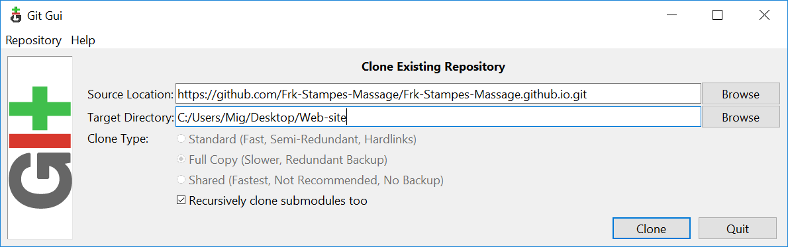

Brug af GitHub Pages
Opret lokal arbejds kopi
For at redigere hjemmesiden, skal man lave en kopi lokalt, som
man kan arbejde på - dette kaldes at lave en 'clone'. For at lave en
'clone', skal man bruge en "git klient" - i denne gannemgang vil jeg bruge
progammet Git on Windows. En god introduktion til
hvad man kan med GIT og programmer til andre platforme kan findes
på siden GIT Pro
Efter programmet er installerte, starter man Git GUI og vælger
"Clone Existing Repositoy", hvorefter man skal udfylde felterne på denne måde:

Det eneste der er vigtigt, er at "Source Location" skal være:
https://github.com/Frk-Stampes-Massage/Frk-Stampes-Massage.github.io.git
- Target Directory skal blot være en ny mappe et sted på den lokale computer.
Efter at have klikket "Clone" hentes en lokal kopi af hjemmesiden og man kan nu
redigere filerne lokalt.
Læg rettelser på nettet
Når man er færdig med at redigere filerne, skal rettelserne lægges på nettet.
Dette gøres ved at starte Git GUI igen og denne gang vælge det repository man
"clonede" tidligere - alternativt kan man højre klikke på mappen og vælge
"Git GUI Here":
Git GIU vil nu vise hvilke filer der er rettet - og hvilke ændringer der er
lavet - i dette eksempel har jeg rettet lidt i teksten om baby'er (baby.html):
Hvis man er tilfreds med rettelserne, klikker man først "Stage Changed"
og dernæst "Commit". Bemærk at man skal udfylde "Commit Message" for at lave en
commit. Når rettelserne er "Commit'ed" lokalt, skal de også gemmes på serveren.
Dette gøres ved at klikke på "Push". Dette vil bede om login oplysninger
(Frk-Stampes-Massage & Kodeord):
Hvis brugernavn og kodeord er korrekt, vil ændringerne blive kopieret til
nettet og være synlige kort tid efter.
h